Крестики-нолики
Популярная и понятная игра, которая служит прекрасной начальной ступенькой в знакомстве с двумерными списками.
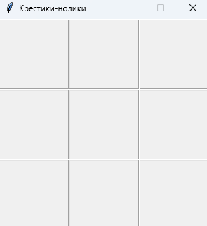
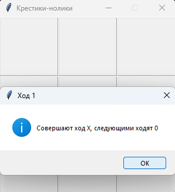
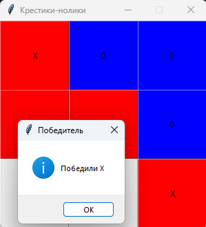
Преподаватель программирования на Roblox/Python и веб дизайна
Я - преподаватель программирования с профильным техническим образованием и опытом работы более 5 лет. Провёл свыше 4 500 занятий по программированию, обучил более 50 учеников в индивидуальном формате. В работе с детьми я придерживаюсь принципа самостоятельной практики - считаю, что именно через действие знания закрепляются лучше всего. На занятиях я направляю ученика к решению, помогая ему мыслить и искать ответы самостоятельно, а не просто получать готовый результат. Особое внимание уделяю индивидуальному подходу: учитываю интересы, темп и особенности каждого ребёнка. Важно поддерживать увлечения учеников и грамотно знакомить их с миром технологий. Я показываю, что даже сложные задачи можно решать по шагам, и этот процесс может быть интересным и вдохновляющим.
Популярная и понятная игра, которая служит прекрасной начальной ступенькой в знакомстве с двумерными списками.



Танковый выстрел из прошлого! Игра про одинокий танк защищающий свою базу от атакающих врагов. Простой и понятный ИИ вражеских танков позволяет сделать достаточно автономных врагов, а управление танком при помощи тяги b поворота позволяет поработаnь с геометрией. Полоски ХП открывают дорогу в мир динамических изменений(размер полос будет менять во время игры в зависимости от количества попаданий по объекту будь то база илли танк).
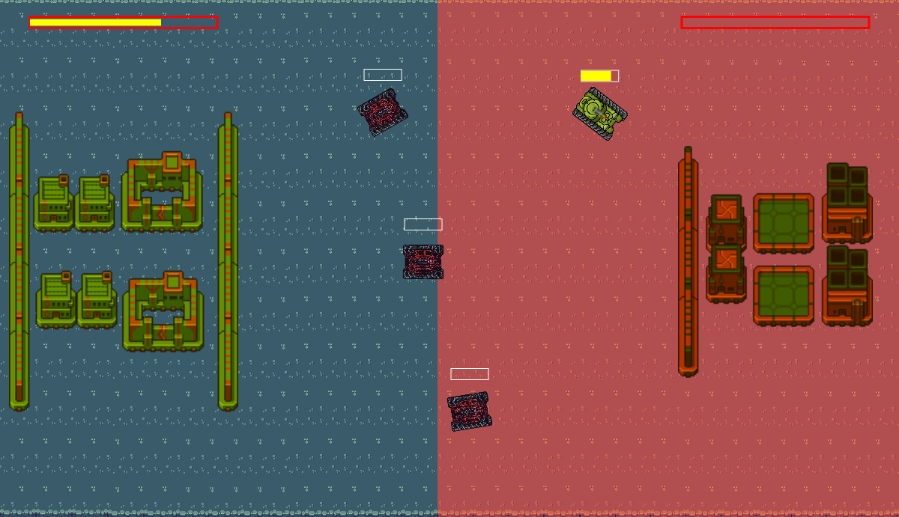
Реализация на основе библиотеки "telebot" популярной игры 3 в ряд. Используются модификации клавиатуры под сообщением и подсчёт счёта выстроеных рядов. Всё это под приятную музыку!
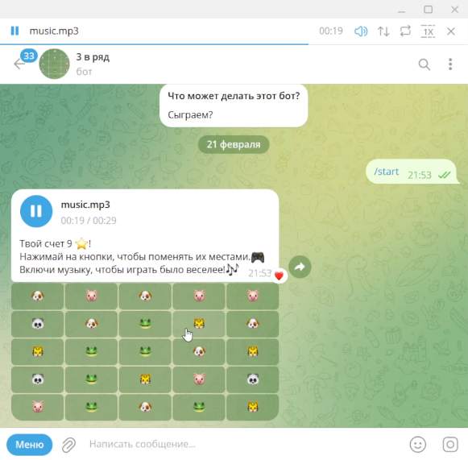
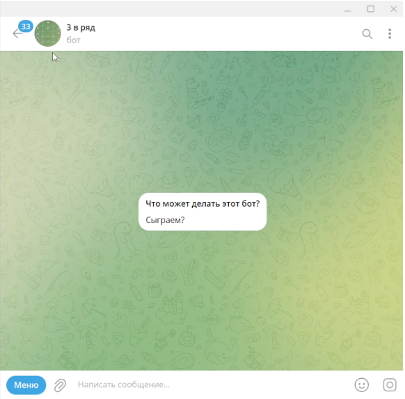
Весёлая, небольшая игра о поиске денег для покупки пирогов у торговца. Есть собираемы монеты, графический пользовательский интерфейс магазина для покупки этих самых пирогов и конечно препятствия которые должны в этом нелёгком деле игроку мешать.
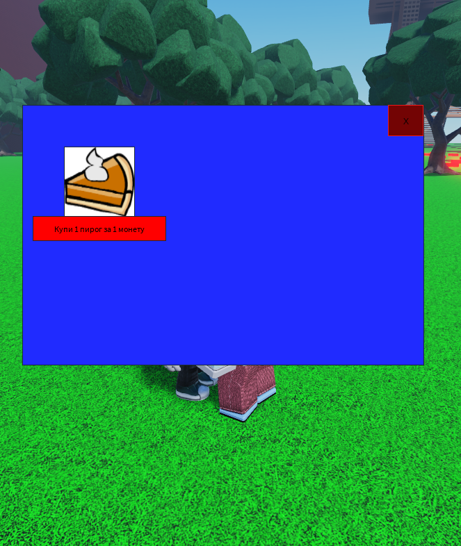
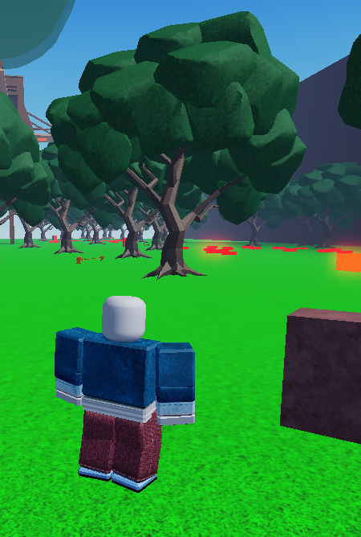
Большая игра про оборону замка от зомби! Анимированный помощьник поможет разобраться в основах игры. Зомби прописан как путь через точки, так и настроена система поиска пути. Реализовано получение денег за убийство зомби, которые можно тратить в магазине или на улучшение замка.
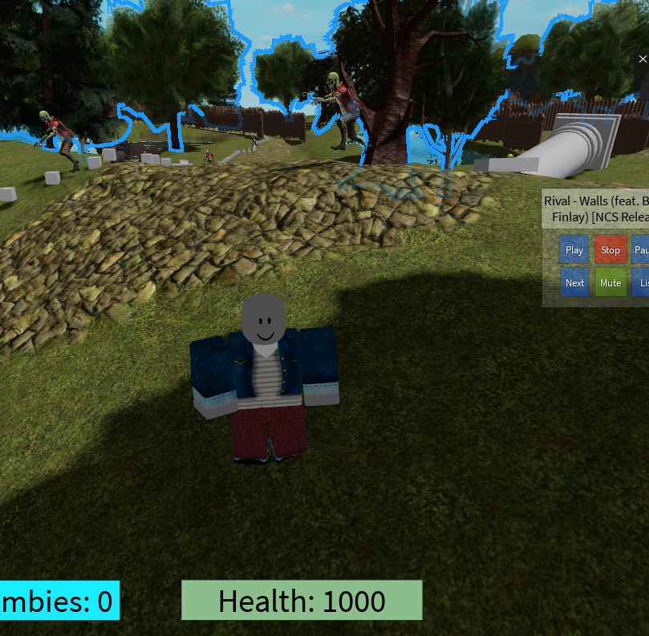
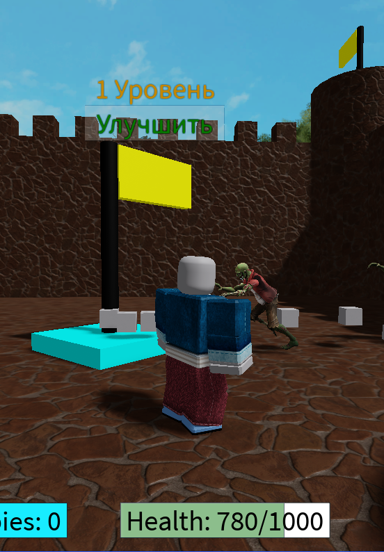
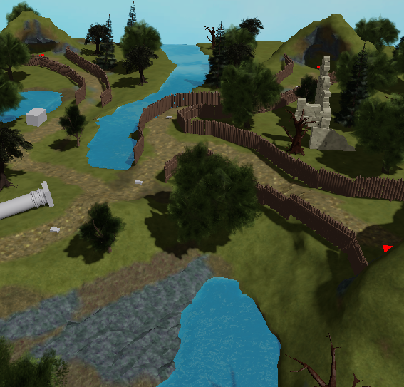
Проект, в котором используются инструменты искусственного интеллекта для создания или обработки контента.
Посмотреть проект